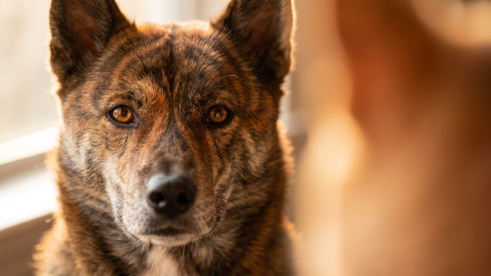

За пределами Японии кай-кенов держат единицы. Порода выглядит как компактный шпиц с тигровым окрасом, но под этой внешностью сидит охотничий пёс, который веками гнал оленя и кабана по горным склонам провинции Кай. Самостоятельность у него в крови, и это меняет всё в совместной жизни. Вот что стоит знать до покупки щенка.
🐾 У вас кай-кен?
AnimaLife соберёт уход под породу: к каким болезням есть склонность, что проверять по возрасту, чем кормить и когда пора к врачу. Бесплатно, прямо в мессенджере.
Собрать план ухода → Собрать в MAX →
У вас iPhone? AnimaLife есть в App Store
Кай-кен входит в группу примитивных японских пород наравне с сибой-ину и акитой. Он думает самостоятельно и не стремится угождать ради угождения. С семьёй пёс привязан и внимателен, с чужими людьми держится сдержанно до холодности.
Классическая черта кай-кена: избирательная преданность. Пёс строит глубокую связь с одним-двумя людьми и относится к остальным членам семьи уже по-другому. Это не агрессия, но и не открытость лабрадора.
С посторонними животными нужна осторожность. Охотничий инстинкт у породы сильный: кошки и мелкие питомцы в зоне риска, особенно если пёс не рос с ними с детства.
Кай-кен умеет карабкаться по деревьям и скалам. Это задокументированная способность, а не миф. Забор в 1,5 метра пёс преодолевает без усилий. Нужно не менее 2 метров плюс навес или поворот наружу сверху.
На прогулке кай-кен должен ходить на поводке. Почует дичь или увидит мелкое животное вдалеке: уходит в погоню, не слыша команд. Это не непослушание, а то, для чего порода создавалась тысячу лет.
Кай-кен хорошо учится, если хозяин понятен и предсказуем. Принуждение и грубость с этой породой не работают: пёс замыкается и перестаёт слушать вообще. Лучше короткие занятия с высокой ценностью подкрепления (мясо, игра) и чёткие границы без исключений.
Социализацию начинают в первые же недели жизни дома. Незнакомые люди, городские звуки, другие собаки — всё вводят осторожно и в позитивном контексте, пока щенку нет полугода.
Шерсть у кай-кена двойная, средней длины. Линяет дважды в год, в период линьки вычёсывать нужно ежедневно. В остальное время достаточно раза в неделю.
Порода здоровая, крупных наследственных проблем немного. Взрослая собака весит 14–18 кг. Купают редко, только при реальном загрязнении. Зимой при купании дома сушат феном полностью: влажная шерсть под одеждой при выходе на холод ведёт к переохлаждению.
Материал носит информационный характер и не заменяет очную консультацию ветеринара.
🐾 Ваш питомец — кай-кен?
Заведите профиль в AnimaLife: приложение запомнит породу, возраст и вес и будет подсказывать по уходу именно для неё. Вопросы AI-ветеринару — круглосуточно и бесплатно.
Завести профиль → Завести в MAX →
У вас iPhone? AnimaLife есть в App Store
🐾 Понравился разбор?
Подпишитесь на канал — каждый день разбираем по одному тревожному симптому у кошек и собак: что в пределах нормы, а когда пора к врачу. Подпишитесь, чтобы не пропустить разбор, который может спасти здоровье вашего питомца.